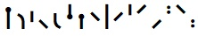
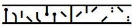

BabelStone Runic Staveless is a Unicode Runic font covering the 16 staveless runes of the Younger Futhark, also known as Hälsinge runes. In this font the staveless runes are mapped to the corresponding Unicode characters for the Younger Futhark, but ideally staveless runes should be encoded separate Unicode characters. The font is available in two styles:
BabelStone Runic Staveless (24 points)

BabelStone Runic Staveless Ruled (24 points)

The tables below render each character using BabelStone Runic Staveless, either using the font installed on your local machine or using WOFF fonts if the font is not installed on your local machine.
| Code Point | Character Name | Transcription | Ordinary | Staveless | Ruled |
|---|---|---|---|---|---|
| 16A0 | RUNIC LETTER FEHU FEOH FE F | f | ᚠ |
ᚠ |
ᚠ |
| 16A2 | RUNIC LETTER URUZ UR U | u | ᚢ |
ᚢ |
ᚢ |
| 16A6 | RUNIC LETTER THURISAZ THURS THORN | þ | ᚦ |
ᚦ |
ᚦ |
| 16AD | RUNIC LETTER SHORT-TWIG-OSS O | ą | ᚭ |
ᚭ |
ᚭ |
| 16B1 | RUNIC LETTER RAIDO RAD REID R | r | ᚱ |
ᚱ |
ᚱ |
| 16B4 | RUNIC LETTER KAUN K | k | ᚴ |
ᚴ |
ᚴ |
| 16BD | RUNIC LETTER SHORT-TWIG-HAGALL H | h | ᚽ |
ᚽ |
ᚽ |
| 16BF | RUNIC LETTER SHORT-TWIG-NAUD N | n | ᚿ |
ᚿ |
ᚿ |
| 16C1 | RUNIC LETTER ISAZ IS ISS I | i | ᛁ |
ᛁ |
ᛁ |
| 16C6 | RUNIC LETTER SHORT-TWIG-AR A | a | ᛆ |
ᛆ |
ᛆ |
| 16CC | RUNIC LETTER SHORT-TWIG-SOL S | s | ᛌ |
ᛌ |
ᛌ |
| 16D0 | RUNIC LETTER SHORT-TWIG-TYR T | t | ᛐ |
ᛐ |
ᛐ |
| 16D3 | RUNIC LETTER SHORT-TWIG-BJARKAN B | ƀ | ᛓ |
ᛓ |
ᛓ |
| 16D8 | RUNIC LETTER LONG-BRANCH-MADR M | m | ᛘ |
ᛘ |
ᛘ |
| 16DA | RUNIC LETTER LAUKAZ LAGU LOGR L | l | ᛚ |
ᛚ |
ᛚ |
| 16E6 | RUNIC LETTER LONG-BRANCH-YR | ʀ | ᛦ |
ᛦ |
ᛦ |
| 16EB | RUNIC SINGLE PUNCTUATION | ᛫ |
᛫ |
᛫ |
|
| 16EC | RUNIC MULTIPLE PUNCTUATION | ᛬ |
᛬ |
᛬ |
|
| 16ED | RUNIC CROSS PUNCTUATION | ᛭ |
᛭ |
᛭ |
| Version | Date | Notes |
|---|---|---|
| 3.000 | 2018-02-13 | Initial release |
| 3.001 | 2018-02-15 | Minor changes |
BabelStone Runic Staveless is licensed under the SIL Open Font License 1.1, which means you are free to use it for personal or commercial purposes, and to redistribute it by itself or as part of a free or commercial software package, just as long as you do not sell the font on its own. The license also allows you to modify the font in any way you like, as long as the modified font does not use "BabelStone" in its name. Please read the license for details.
BabelStone Runic | BabelStone Runic Elder Futhark | BabelStone Younger Futhark Runes | BabelStone Runic Dotted | BabelStone Anglo-Saxon Runes | BabelStone Moon Runes